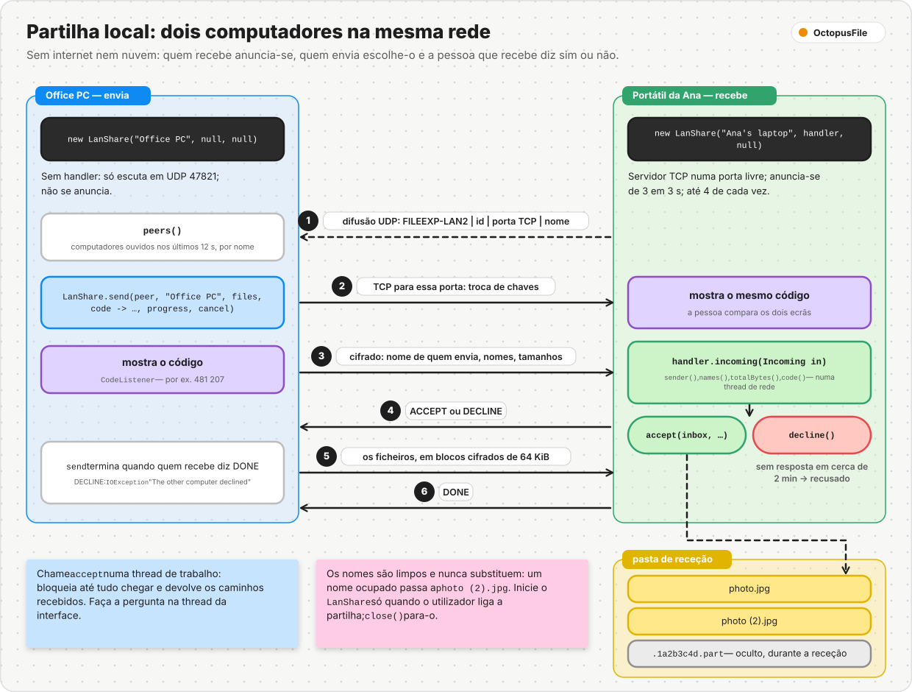
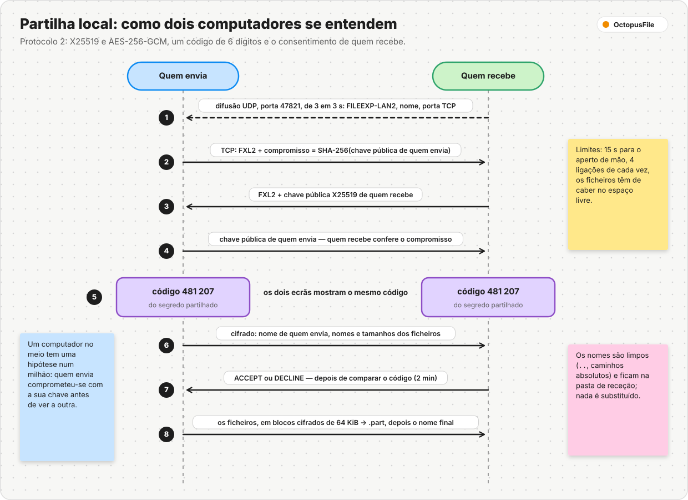
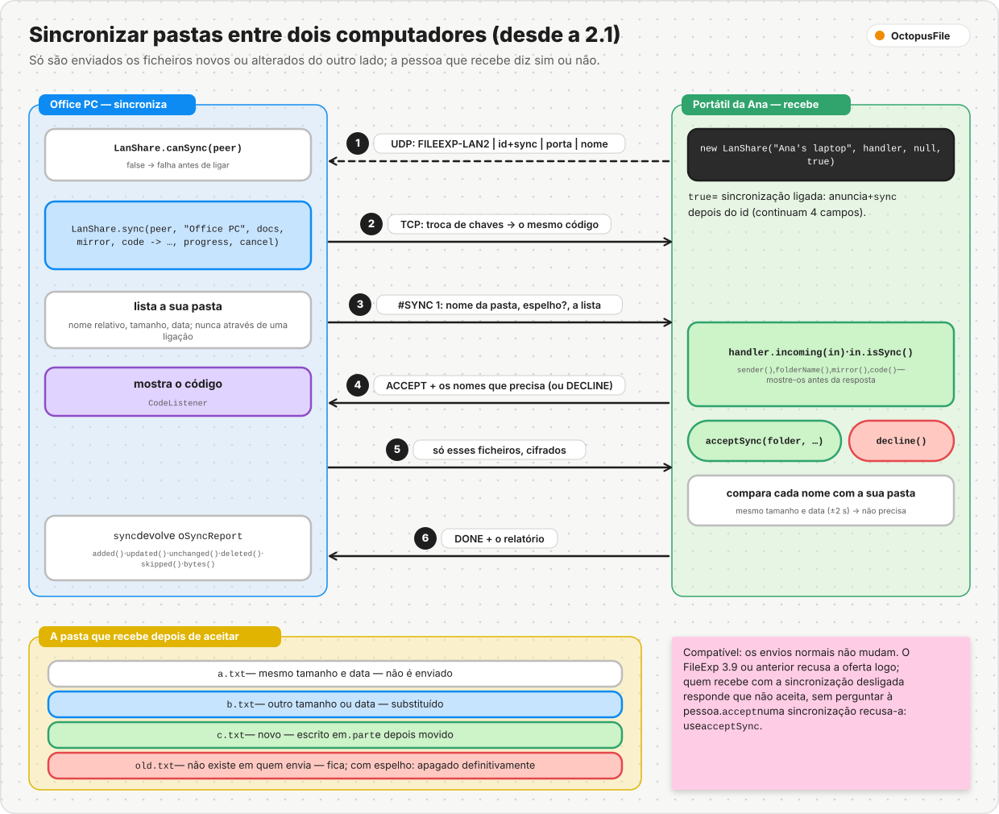

Partilha local (rede local)

Envie ficheiros e pastas para outro computador na mesma rede — sem internet, sem nuvem, sem biblioteca externa.
java// receiving computer
try (LanShare receiver = new LanShare("Ana's laptop", in -> {
System.out.println(in.sender() + " sends " + in.names() + " - code " + in.code());
new Thread(() -> {
try {
in.accept(inbox, null, () -> false); // or in.decline()
} catch (IOException ex) {
ex.printStackTrace();
}
}).start();
}, null)) { // null = all network interfaces
// ...
}
// sending computer
try (LanShare lan = new LanShare("Office PC", null, null)) { // no handler: only looks for computers
LanShare.Peer peer = lan.peers().get(0);
LanShare.send(peer, "Office PC", List.of(photo), code -> System.out.println("Code: " + code), null, () -> false);
}
Como funciona#

| Passo | |
|---|---|
| Descoberta | os computadores que aceitam ficheiros anunciam-se por difusão UDP na porta 47821 a cada 3 s; peers() lista os que foram vistos nos últimos 12 s |
| Troca de chaves | X25519 por ligação (uma chave nova de cada vez); o emissor envia primeiro um compromisso (um hash da chave), recebe a chave do recetor e só então revela a sua |
| Cifra | AES-256-GCM por trama de 64 KB, nonce = sentido + contador (nunca reutilizado) |
| Confirmação | os dois lados obtêm o mesmo código de confirmação de 6 dígitos, derivado do segredo partilhado: se os códigos coincidirem, não há ninguém no meio. Graças ao compromisso, um computador no meio não pode procurar chaves que deem o mesmo código nos dois lados: tem uma hipótese num milhão |
| Consentimento | o recetor recebe um Incoming (emissor, nomes, tamanho total, código) e chama accept ou decline; sem resposta em cerca de 2 minutos (125 s), a transferência é recusada |
| Proteção | os nomes são limpos (.., unidades, caracteres inválidos, nomes de dispositivo do Windows como CON ou NUL, pontos finais), os ficheiros vão para inbox com nomes livres (photo (2).jpg), escritos primeiro num novo ficheiro .part oculto com um nome aleatório (nunca num existente) |
| Limites | no máximo 4 ligações de entrada em simultâneo (MAX_SESSIONS), 15 s para concluir o handshake, os ficheiros têm de caber no espaço livre de inbox |
| Versões | protocolo 2 desde o OctopusFile 1.3 (sincronização de pastas desde a 2.1, ver abaixo); um computador com o protocolo 1 (FileExp 3.8 e anteriores) continua na lista de peers(), e enviar para ele falha com "uses an older version of the sharing: update it" |
O handler é chamado numa thread de rede: mostre a sua pergunta na thread da interface e chame accept a partir de uma thread de trabalho (bloqueia até tudo ser recebido). Progresso: os argumentos LongConsumer de send e accept.
Sincronizar pastas (desde a 2.1)#

LanShare.sync deixa uma pasta do outro computador igual a uma pasta deste, enviando só os ficheiros que lá são novos ou estão alterados. Quem recebe liga a sincronização com o construtor de quatro argumentos:
java// computador que recebe: envios normais e sincronizações de pastas
try (LanShare receiver = new LanShare("Ana's laptop", in -> {
if (in.isSync()) {
System.out.println(in.sender() + " syncs \"" + in.folderName() + "\"" + (in.mirror() ? " (mirror)" : "")
+ " - code " + in.code());
new Thread(() -> {
try {
LanShare.SyncReport r = in.acceptSync(backups.resolve(in.folderName()), null, () -> false);
System.out.println(r.added().size() + " new, " + r.updated().size() + " updated, " + r.unchanged() + " unchanged");
} catch (IOException ex) {
ex.printStackTrace();
}
}).start();
} else {
// um envio normal, como antes: in.accept(inbox, ...) ou in.decline()
}
}, null, true)) { // true = aceitar também sincronizações de pastas
// ...
}
// computador que envia
LanShare.Peer peer = lan.peers().get(0);
if (LanShare.canSync(peer)) {
LanShare.SyncReport r = LanShare.sync(peer, "Office PC", docs, false, code -> System.out.println("Code: " + code),
null, () -> false);
System.out.println(r.sent() + " files sent, " + r.bytes() + " bytes");
}
| Capacidade | quem recebe com a sincronização ligada anuncia FILEEXP-LAN2|id+sync|port|name: os quatro campos mantêm-se, por isso os computadores mais antigos continuam a listá-lo; canSync(peer) lê-a |
| O que é enviado | quem envia manda a lista dos seus ficheiros (nome relativo, tamanho, data de modificação); quem recebe responde com os que precisa: um ficheiro com o mesmo nome (sem distinguir maiúsculas) e o mesmo tamanho e data, com 2 s de tolerância (discos FAT), não é enviado |
| Consentimento | como para ficheiros: o mesmo código de 6 dígitos dos dois lados, e a pessoa vê quem sincroniza, que pasta e se é um espelho; acceptSync(folder, …) ou decline(); sem resposta em cerca de 2 minutos a sincronização é recusada |
| Substitui | aceitar significa que um ficheiro alterado (outro tamanho ou outra data, mais recente ou mais antiga) é substituído pela cópia de quem envia; os ficheiros novos e alterados são escritos primeiro num ficheiro .part oculto e depois movidos para o lugar |
| Espelho | só quando quem envia o pede (mirror = true, mostrado por in.mirror()): os ficheiros e pastas que quem envia não tem são apagados definitivamente (não vão para o lixo) |
| Segurança | os nomes são limpos como para ficheiros; as ligações na pasta que recebe nunca são seguidas; um ficheiro em uso, uma pasta no caminho ou um nome usado duas vezes vai para skipped() e o resto continua |
| Resultado | SyncReport (igual dos dois lados): added(), updated(), unchanged(), deleted(), skipped(), bytes(), sent() |
Compatibilidade: os envios normais não mudam, em nenhum dos sentidos. sync para um computador sem a capacidade falha antes de ligar ("cannot receive a folder sync"). Quem recebe sem a sincronização ligada responde que não aceita sincronizações de pastas, sem perguntar à pessoa; um computador com o FileExp 3.9 ou anterior recusa a oferta logo. No handler, in.accept(...) numa sincronização recusa-a e lança uma exceção: responda a uma sincronização com acceptSync.
Firewall: na primeira vez que um computador fica à escuta, o Windows pode pedir para permitir a aplicação em redes privadas. Inicie o LanShare só quando o utilizador ativar a partilha.
Exemplos compilados e executados peloTal como o cofre, o protocolo está testado (ida e volta byte a byte, mesmo código nos dois lados, recusas, ligações estranhas, uma chave que não corresponde ao seu compromisso, demasiadas ligações), mas não foi auditado de forma independente. Consulte Segurança.
DocExamplesTest